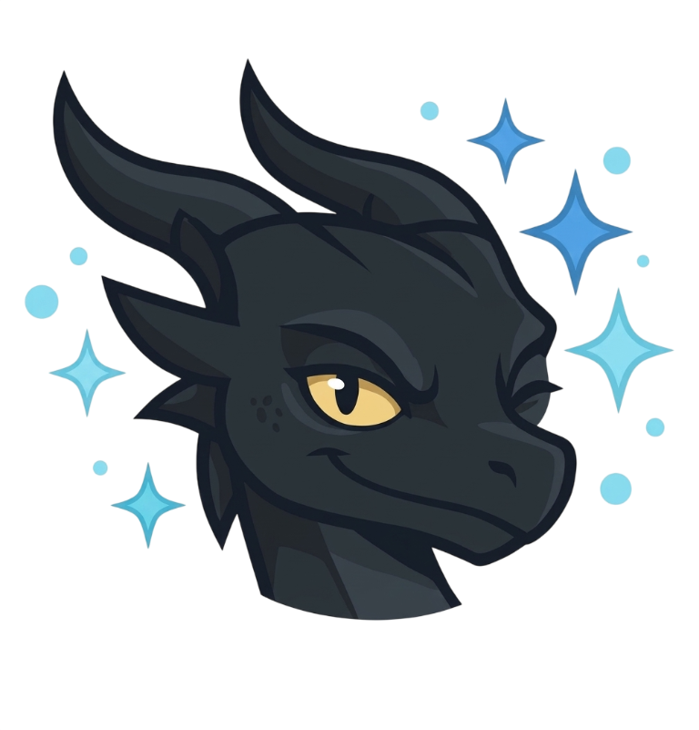
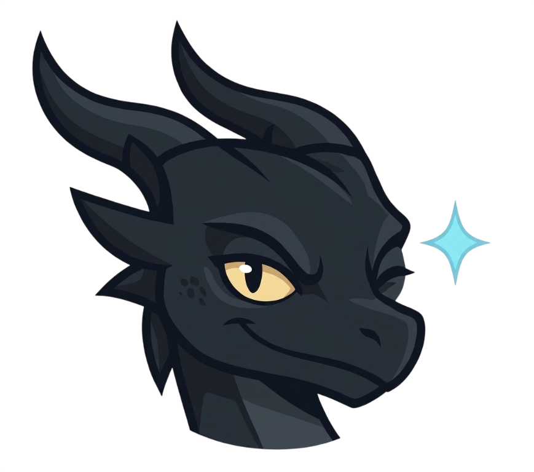

Timurs Stroganovs
Team Lead Developer
A student team project
PX26 Todo List is a school project built by four students to practice web development, teamwork, and turning an idea into a useful app.
Try the task list
Add tasks, edit them as plans change, track progress, and switch between light and dark themes. Tasks and your theme preference are saved in your browser, and no installation or build step is needed.
Team Lead Developer
FrontEnd Developer
JavaScript Developer
Project Demonstrator & QA Tester

Our little code dragon keeps the empty state company and gives the project a character of its own.